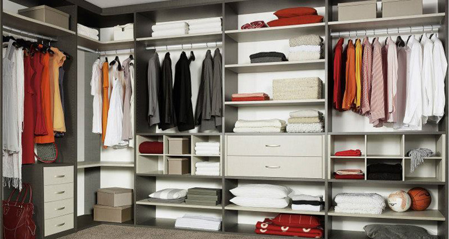

Made - Сделанный
Где лучше заказать кухню, шкаф-купе, распашной шкаф или другую корпусную мебель по индивидуальным размерам в Новосибирске?
Наше предприятие оснащено современным оборудованием, имеет свой мебельный цех по производству качественной мебели – будь это кухонный гарнитур, шкаф-купе в прихожую или спальню, стенка со шкафом в гостиную или другие изделия. Мы выполним заказ на создание мебели любой формы по индивидуальному дизайн-проекту и по собственным размерам.
Заказать изготовление корпусной мебели на заказ.
Чтобы изготовить корпусную мебель под размеры и планировку определенного помещения в частном доме, квартире или офисе, чтобы она выполняла не только свои функции хранения различных вещей, техники, но и придавала гармоничный и законченный вид всему интерьеру, была удобна и красива. При разработке оригинального проекта конструкторы и дизайнеры нашего предприятия учитывают пожелания заказчика не только при выборе материала, его цвета, фактуры, вида фурнитуры, но и точно замеряют размеры изделия и габариты помещения.
Опытные профессионалы посоветуют оптимальную комплектацию и конфигурацию заказного изделия, чтобы выполнить его функциональное и интерьерное назначение. Их рекомендации помогут выбрать подходящий ценовой вариант и при возможности сэкономить на заказе при неизменном качестве работы.
Например, красивый и вместительный шкаф-купе в прихожую с правильно подобранным наполнением может визуально увеличить пространство, украсить вход в квартиру и вместить в себя необходимые вещи.
Особенно важна проработка конструкции кухонных гарнитуров под заказ. Удобство размещения ящиков и полок, их размер, отделка фасадов, материал столешницы и систем открывания дверок – эти детали требуют продуманного решения. Ведь кухня может многие годы верно служить своим хозяевам, принося только положительные эмоции.
Поделиться: